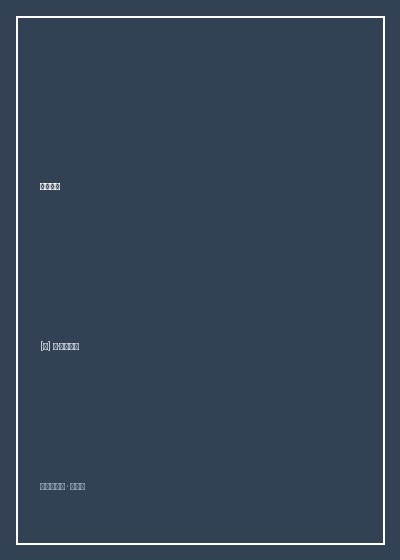

长腿叔叔

8.7
★★★★★
豆瓣评分 · 48,900 人评价
未标记阅读状态
世界书信体成长文学皇冠上的明珠，孤女茱蒂用百封真挚幽默的信札，谱写出独立自强与拥抱生活的天真凯歌。
总体观点
简·韦伯斯特的《长腿叔叔》（Daddy-Long-Legs）绝非一部简单的灰姑娘式浪漫言情小说，而是一部闪耀着早期女性独立自主意识与现代公民精神的成长教育杰作。小说以孤儿院出身的女孩茱蒂（洁鲁莎·艾伯特）给匿名资助人“长腿叔叔”所写的百余封书信为主线，生动重构了一名年轻女性进入现代大学后思想蜕变的心路历程。
作品最动人心魄之处，在于茱蒂身上那种不可摧毁的生命韧性与自尊心。面对资助人的慷慨供养，她从未沦为温室中谄媚的受施者，而是通过刻苦阅读、投稿写作与暑期兼职家教，一步步偿还贷款、争取经济独立与思想自由。全书洋溢着明朗机智的幽默感，向世人证明：真正的高贵不在于优渥出身，而在于向阳而生的灵魂与拥抱当下的生活美学。
核心观点
-
1. 拒绝附庸：以自食其力守卫尊严的纯洁底线
接受资助是走向自立的跳板而非依赖的温床，茱蒂从一开始就立志用稿费和家教报酬偿还叔叔的大学学费。
当叔叔寄来昂贵的圣诞礼物和零花钱时，茱蒂在信中礼貌却坚决地退回过多馈赠，重申自己要成为自力更生的独立作家。 -
2. 读书与知识弥合阶级鸿沟的奇迹力量
面对大学里出身富裕、见多识广的室友，茱蒂通过如饥似渴地阅读弥补文化视野的空白，建立从容平等的对话姿态。
茱蒂在图书馆发奋苦读《爱丽丝梦游仙境》《简·爱》与大仲马名著，迅速抹平孤儿院单调童年带来的知识盲区，名列前茅。 -
3. 活在当下：幸福由每一个闪闪发光的微小瞬间铸就
生活最大的秘密在于不为过去的不幸懊悔，也不为未来的渺茫焦虑，而是全身心感受当下的每一寸阳光与微风。
茱蒂在洛克威洛农场给叔叔写信，描绘在树荫下赤脚读书、在清晨采摘挂满露珠的野草莓，文字中流淌着对生存本身的纯粹感激。 -
4. 直言不讳的真实沟通：反抗父权审视的个性张力
在信中，茱蒂从不粉饰太平，她向这位素未谋面的保护人倾诉考试受挫、室友攀比以及对资助人独断专行的机智抗议。
当长腿叔叔以长辈口吻严厉干涉她去同学家度暑假时，茱蒂在信中据理力争，坦率抗议叔叔的专制作风，展现了鲜活独立的人格。 -
5. 书信体小说的微观心理全景与互动戏剧感
纯单向的书信叙事创造了独特的张力空间，读者的视线与茱蒂的信纸同频共振，在留白处见证彼此心扉的缓缓敞开。
信纸间附带的茱蒂手绘简笔小人草图，用诙谐可爱的自嘲笔触化解了生活的沉重，使这部小说成为治愈百年的温暖经典。
树状思维导图
全书思维导图 · 知识脉络树
已复制思维导图大纲到剪贴板！
全书结构
-
第一部分 忧郁的星期三
全书序幕，交代约翰·格里尔孤儿院的灰暗压抑生活，以及神秘理事惊鸿一瞥留下的修长背影。
生动刻画理事们视察孤儿院时茱蒂疲于奔命照顾弟妹的狼狈场景，为后续命运转折埋下伏笔。 -
第二部分 大学第一年：推开新世界大门
茱蒂初入女子学院，体验大学课程、宿舍社交与给叔叔写信的摸索期。
记录茱蒂给叔叔写的第一封信，坦陈自己数学不及格与初次穿上漂亮新裙子时的雀跃心情。 -
第三部分 大学第二年：洛克威洛的夏天与文学梦想
在乡村农场度过宁静夏日，开启诗歌与短篇小说创作，与杰维斯少爷初次结识。
详述茱蒂在农场阁楼伏案写作《变色龙》小说的过程，首次收到杂志社三美元稿酬的巨大自豪。 -
第四部分 大学第三年：社交波澜与自立抉择
面对家庭贫富差距带来的自尊考验，拒绝附庸，靠暑期兼职赚取生活费。
茱蒂顶住诱惑拒绝去巴黎豪华度假，选择去山区担任顽童家庭教师，坚守自我独立防线。 -
第五部分 大学第四年与真相大白
学业圆满毕业，叔叔病重传讯，两人在纽约病榻前相见揭晓长腿叔叔的真实身份。
描绘茱蒂踏入病房，赫然发现心心念念的白发长腿叔叔竟是一直默默相伴的杰维斯少爷，浪漫与自立迎来圆满合鸣。